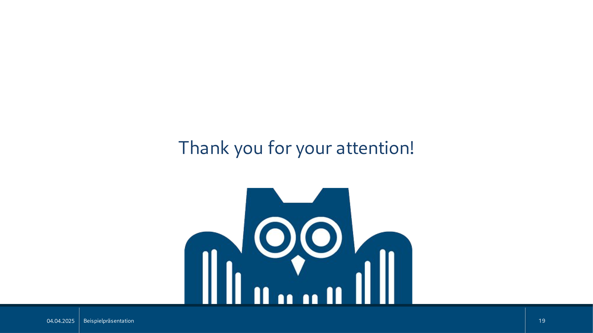

17 Modelling Context for Language Variation and Change
Overview
This research programme explores the interplay between different forms of context in shaping language variation and semantic change. It operates within the Cascade project, a Marie Curie Doctoral Network dedicated to the computational analysis of semantic change across diverse environments. The project employs the chemical revolution—a pivotal paradigm shift from the phlogiston theory to modern oxygen theory—as a pilot study, drawing upon the Royal Society Corpus as its primary data source.
The investigation synthesises principles from linguistics and information theory, including language variation, register theory, and rational communication, to understand how language adapts to scientific evolution. The team employs a multi-faceted computational toolkit to dissect this process. Previous work by the authors demonstrated the utility of Kullback-Leibler divergence for detecting periods of significant linguistic change, cascade models (Hawkes processes) for identifying key innovators like Priestley and spreaders like Pearson, and word2vec for visualising the displacement of the ‘phlogiston’ semantic space by ‘oxygen’ terminology.
Moreover, the authors applied the concept of surprisal to model the cognitive effort associated with new terms, demonstrating how structural compression fosters more efficient terminology as concepts become established. The current project, led by PhD student Sofía Aguilar, aims to synthesise these distinct approaches. Aguilar proposes a novel framework that combines BERT embeddings with a Transformer-Graph Convolutional Network (GCN) to model the latent interactions between semantic content and contextual metadata, such as authors and journals, to cultivate a more holistic understanding of conceptual change.
17.1 A Framework for Scientific Discourse

The authors have developed a robust theoretical framework to analyse transformations in scientific discourse, situating their work within the Cascade project, a Marie Curie Doctoral Network. Its central objective is to model how different forms of context interact to drive semantic change. To this end, the project uses the chemical revolution as a pilot case study, drawing on texts from the Royal Society Corpus.
This investigation rests upon two key linguistic principles. First, the principles of language variation and register theory posit that situational context fundamentally shapes language use. This theory also explains how the linguistic system’s inherent flexibility permits various encodings for a concept, such as the evolution from ‘dephlogisticated air’ to the term ‘oxygen’. Second, the framework integrates rational communication and information-theoretic accounts. These accounts propose that such variation is not arbitrary but rather a mechanism for modulating information content, enabling writers to achieve communicative efficiency whilst maintaining a reasonable cognitive load.
17.2 Detecting Change with Kullback-Leibler Divergence
To pinpoint the moments and mechanisms of linguistic change, the team employs Kullback-Leibler (KL) divergence, a method that transcends the static, period-based comparisons typical of traditional corpus linguistics. Instead, the authors model change as a continuous process. Their underlying assumption is that linguistic divergence increases with temporal distance; language from periods far apart should differ more than language from adjacent periods.
In practice, this involves constructing a continuous timeline of language use. The authors calculate KL divergence repeatedly using sliding bins that encompass a set number of previous and past years. This dynamic process yields a diachronic comparison that illuminates moments of significant transformation, visualised as peaks of divergence, and periods of stability, represented by troughs of convergence.
17.3 Lexical and Grammatical Evolution
The team’s analysis of linguistic evolution extends across both lexical and grammatical levels to build a comprehensive picture of change. At the lexical level, their diachronic comparison reveals that peaks in divergence are primarily driven by the emergence of new terminology. During the chemical revolution, for example, scientists first wrote about experimenting with ‘air’ that was ‘dephlogisticated’ long before the concept and term ‘oxygen’ became established.
Concurrently, the investigation tracks grammatical shifts by retaining function words, which are often discarded in such analyses. Through the analysis of part-of-speech (POS) trigrams, the authors identify grammatical patterns that co-occur with and support lexical innovation. These structures, such as adjectival patterns like ‘dephlogisticated air’ or nominal phrases like ‘oxide of iron’, also generate divergence peaks, demonstrating that grammar plays an active, supportive role in the expression of new scientific concepts.
17.4 Visualising Semantic Shifts
To visualise the profound conceptual shifts of the chemical revolution, the authors modelled the semantic space using the word2vec method. This approach maps the relationships between terms, offering a visual representation of the paradigmatic context. The results of this analysis proved decisive.
Their model showed how the established ‘phlogiston’ semantic space was systematically displaced by terminology associated with the new oxygen theory. Over time, the term ‘phlogiston’ and its related concepts occupied a progressively smaller area within the semantic map, eventually disappearing from the dominant scientific discourse.
17.5 Identifying Innovators with Cascade Models
Beyond tracking what changes, the team sought to identify who drives these transformations. To determine the key actors leading and disseminating new scientific terminology, the authors employed cascade models, a methodology derived from Hawkes processes. This technique, which originated in fields like earthquake detection and is now applied to social media analysis, models how events or behaviours trigger subsequent events in a network.
By applying these models to the usage of chemical words in the Royal Society Corpus, the authors could distinguish innovators from those they influenced. Their results identified distinct roles within the scientific community. Priestley emerged as the central innovator who initiated the change. He, in turn, heavily influenced George Pearson, who was identified as a critical early adopter and a spreader responsible for disseminating the new terminology. The models also categorised other figures, such as late adopters, thereby providing a clear map of the innovation’s diffusion.
17.6 Surprisal, Cognition, and Terminology
To understand the drivers of terminological evolution, the authors adopt a communicative perspective centred on the concept of surprisal. Surprisal quantifies the predictability of a word in a given context and is proportional to the cognitive effort needed to process it; a highly surprising word is informative but difficult to process. For instance, the first mention of ‘oxygen’ by Priestley carried a high surprisal value for its contemporary readers.
The authors observed a distinct evolutionary pattern they term structural compression. Initially, a new technical term exhibits high surprisal. As it gains traction within the community, its usage becomes more common and its surprisal value steadily declines, eventually reaching a saturation point. This reduction in collective cognitive effort paves the way for a more compact and efficient linguistic form to emerge and solidify its place in the lexicon. Crucially, the authors note that this mechanism appears specific to terminological development, as it does not apply to the evolution of general-purpose phrases.
17.7 A Unified Framework for Contextual Interaction
Building on this body of work, Sofía Aguilar is leading a project to create a unified framework for modelling the interaction between diverse contextual factors. Her multi-stage methodology aims to cultivate a more holistic view of conceptual change. The process begins with data sampling, where Aguilar uses Kullback-Leibler divergence to identify the key terms and historical periods that define the phlogiston-oxygen debate.
In the subsequent network construction stage, the team represents the interactions that fostered the new concept. Aguilar’s approach uses BERT to create term embeddings, combining them with contextual metadata—such as authors and journals—into comprehensive node feature matrices for every 20-year period. To manage the high computational cost of this dense graph, Aguilar proposes using community detection to simplify the network structure.
The third stage focuses on predicting latent relationships. Aguilar employs a hybrid Transformer-Graph Convolutional Network (GCN) to infer connections not explicitly mentioned in the source texts. The GCN learns structural patterns from the node profiles to predict new links, whilst the Transformer’s attention mechanism identifies the most influential nodes driving these interactions.
Finally, for validation, Aguilar’s framework performs entity alignment. This step assesses whether the predicted relationships are meaningful by searching for isomorphic graphs or recurring network motifs over time. By identifying stable structures, the team can confirm the persistence and significance of the discovered interaction patterns.
17.8 Limitations and Future Perspectives
The authors conclude by outlining several critical limitations and forward-looking questions that define the future of computational conceptual history. A primary challenge is distinguishing genuine epistemic shifts from mere linguistic drift; can models truly trace the evolution of thought itself? Another open question concerns the role of context: how exactly do language models incorporate metadata, and should it be treated as a core signal of meaning or as external noise? The current project proceeds on the assumption that context is a core signal.
Furthermore, the authors continue to debate the fundamental unit of language change. Are shifts best observed at the level of words, concepts, grammar, or broader discourse patterns? This leads to the question of whether it is possible to identify recurring linguistic pathways for the emergence of new concepts across different historical and scientific domains. Finally, as the models used to investigate these phenomena grow in complexity, the limits of their interpretability become a central concern, demanding new methods for understanding and validating their outputs.